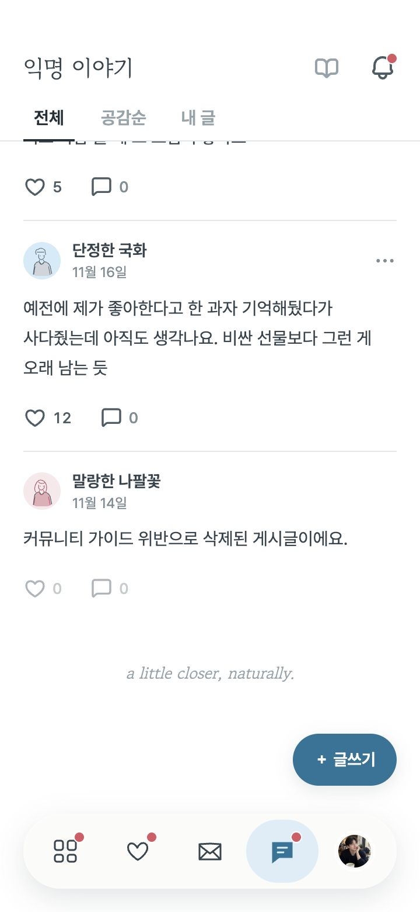
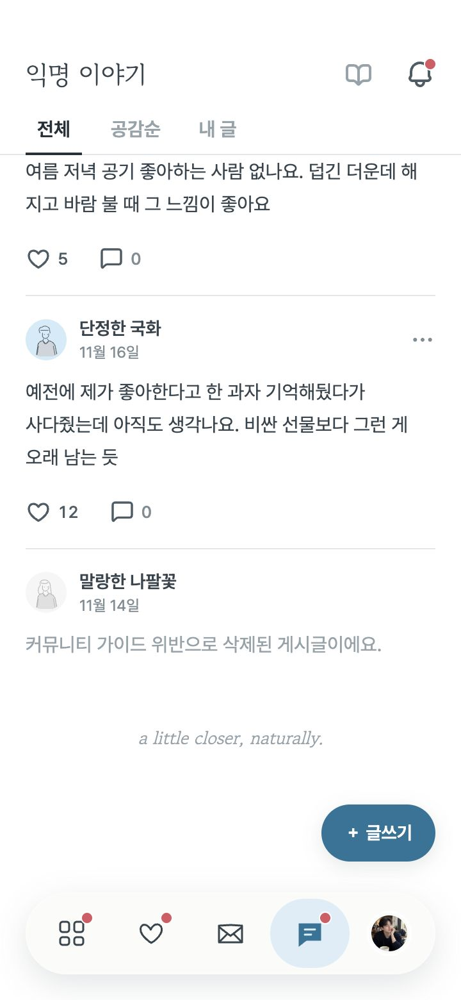
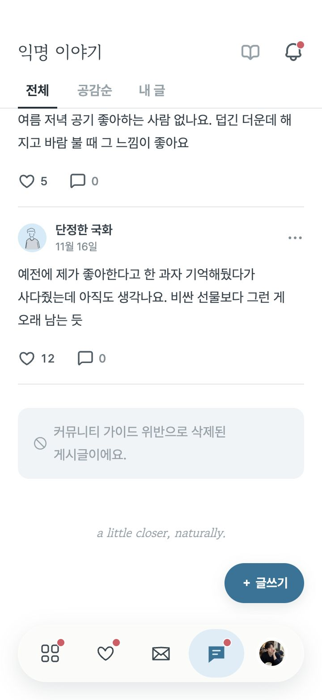
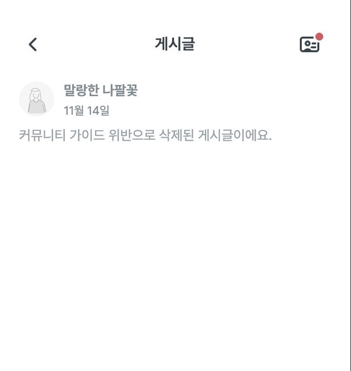
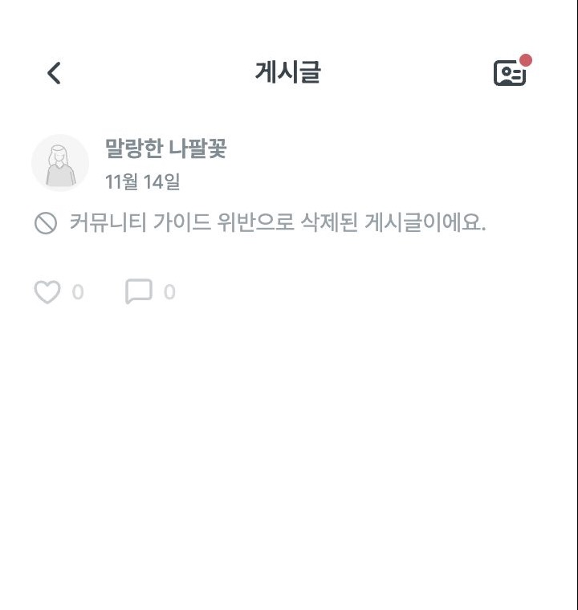

익명 이야기 · 가이드 위반으로 삭제된 글 · 댓글 비활성
- 지금: 지운 글도 얼굴 · 이름 · 날짜 · 공감 0 · 댓글 0이 그대로 보이고, 누르면 상세로 들어가 공감 · 댓글을 쓸 수 있어요.
- 세 안 공통: 목록 카드는 눌러도 열리지 않고, 공감 · 댓글 · 더보기(⋯)가 눌리지 않아요. 상세(알림 등으로 들어온 경우)도 같은 규칙, 지운 댓글은 답글 · 공감 없이.
- 삭제 문구: "커뮤니티 가이드 위반으로 삭제된 …" 글자도 흐리게 — 본문 회색(fg-muted)보다 한 단계 연한
fg-subtle(cool-neutral-400), 금지 아이콘도 같은 색. 세 안 모두.
- D1 흐리게 · 행동 없음: 얼굴 회색 · 이름 연하게, 공감 · 댓글 줄을 아예 빼요. 상세는 입력창도 빼요.
- D2 회색 한 줄: 얼굴 · 이름 · 날짜 · 공감 · 댓글을 모두 빼고 회색 바탕 한 줄(금지 아이콘 + 문구)만. 목록에서 가장 확실히 "없는 글"로 보여요.
- D3 보이되 비활성: 이름 줄은 흐리게 두고, 공감 · 댓글 아이콘을 연하게 남겨 "눌리지 않음"을 보여 줘요. 상세 입력창도 흐린 채 "댓글을 달 수 없는 글이에요".
목록

지금공감 · 댓글 눌림
D1흐리게 · 행동 없음
D2회색 한 줄D3보이되 비활성지운 글 상세 (알림 등으로 들어왔을 때)

D1공감 · 댓글 · 입력창 없음D2회색 한 줄만
D3연하게 · 입력 막힘지운 댓글
D1얼굴 회색 · 이름 연하게D2회색 한 줄D3흐린 이름 + 아이콘 한 줄